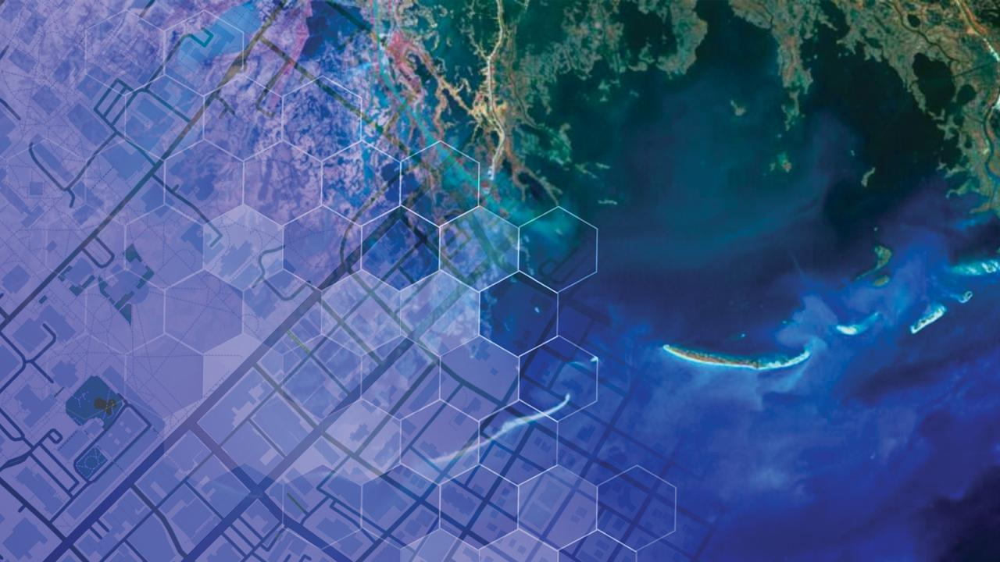

|  | Joel Newswanger's GIS SkillsList skills used. |
| Home | Python | Machine Learning | Web Development |
This was my capstone project for my Master's program in GIS at Penn State. The project proposal was developed to address a real-life use case for my team in the drinking water quality lab The design reflects the actual user needs and resource constraints for this use case.
Identifying features in aerial imagery using a deep learning model. Model Results
This project is from one of my first exposures to GIS. It is the capstone project from the Intro GIS class I took in undergrad. I decided to do a location suitibility analysis on places to live after graduation. In this class, and specifically this extended project as I delved into routing algorithms and computing techniques, I learned how complex and interesting GIS can be. I found not only where to physically go after graduation, but unknowingly, where my career interests would go.
Project Report